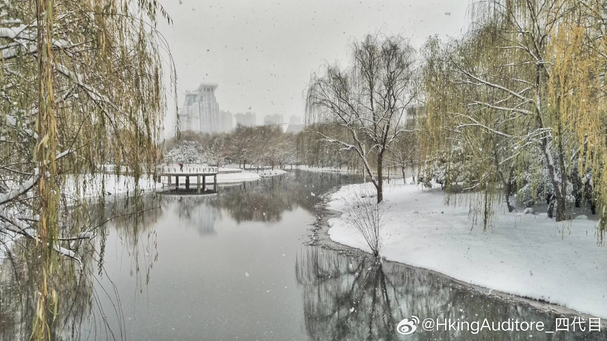

晚安
看到武汉下雪了。
五年前在武汉第一次看到雪。当时前一晚还在熬夜，还是刷牙时在阳台看到外面一片白，觉都没怎么睡，一大早就冲出去趴在雪堆里。
那时我以为武汉的每个冬天都会如此，甚至也没有拍太多照片。后来我有了相机，每年冬天都在盼着下雪，但之后就再也没见过成堆的积雪了，武汉最多也不过是给我些飘散的小冰晶，空给我对这个冬天无尽的幻想让我挨冻，但从来不会兑现。
如果武汉从来没下过雪，这种望穿秋水的痛苦也许反而不会这么强。也可能是下雪与当时的无忧无虑混作一起，让我把当时的快乐与下雪给绑定了。无知的我当时还不知道何谓考研，保研也只是形容“往届优秀学长学姐”的某种词缀，当时还不会写shader却对自己的图形学感觉良好——世界上没有什么要紧事。
晚上加班的时候，我看到飘雪的视频后在工位哭了。我只觉得好羡慕，但我也分不清我羡慕的到底是下雪还是下雪时候的我，如果深圳能下雪，我可能也不会栽在雪地里游泳了。我爱那天的我，因为他什么都不期盼，他只喜欢那天的雪，而且那天的雪也很喜欢他，下的很大。那天的我站在图书馆南边的工地，好像裹上雪的一切都都很美，看施工现场都那么可爱，但我临了下班看到井然的马路，我只觉得一切都可恨——可是我也不知道为什么我会恨，我恨映入眼帘的一切，也恨我自己，毕竟只有恨的人当然不值得被爱。
我记得那天我被雪花淹没，好像她在抱我。
但是我做梦梦不到下雪天。
看到武汉下雪了。
五年前在武汉第一次看到雪。当时前一晚还在熬夜，还是刷牙时在阳台看到外面一片白，觉都没怎么睡，一大早就冲出去趴在雪堆里。
那时我以为武汉的每个冬天都会如此，甚至也没有拍太多照片。后来我有了相机，每年冬天都在盼着下雪，但之后就再也没见过成堆的积雪了，武汉最多也不过是给我些飘散的小冰晶，空给我对这个冬天无尽的幻想让我挨冻，但从来不会兑现。
如果武汉从来没下过雪，这种望穿秋水的痛苦也许反而不会这么强。也可能是下雪与当时的无忧无虑混作一起，让我把当时的快乐与下雪给绑定了。无知的我当时还不知道何谓考研，保研也只是形容“往届优秀学长学姐”的某种词缀，当时还不会写shader却对自己的图形学感觉良好——世界上没有什么要紧事。
晚上加班的时候，我看到飘雪的视频后在工位哭了。我只觉得好羡慕，但我也分不清我羡慕的到底是下雪还是下雪时候的我，如果深圳能下雪，我可能也不会栽在雪地里游泳了。我爱那天的我，因为他什么都不期盼，他只喜欢那天的雪，而且那天的雪也很喜欢他，下的很大。那天的我站在图书馆南边的工地，好像裹上雪的一切都都很美，看施工现场都那么可爱，但我临了下班看到井然的马路，我只觉得一切都可恨——可是我也不知道为什么我会恨，我恨映入眼帘的一切，也恨我自己，毕竟只有恨的人当然不值得被爱。
我记得那天我被雪花淹没，好像她在抱我。
但是我做梦梦不到下雪天。
- 